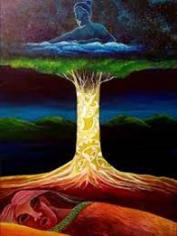

HE KŌRERO TĪMATANGA
THE CREATION MYTHOLOGY
In the beginning there was Te Korekore, the darkness where there was potential but as yet no life. Within Te Korekore lived Io the Supreme Being, Io who created numerous realms of Po, the night. Then the darkness gave way to Te Ata the dawn, from which the primal parents Papatūānuku, the Earth Mother and Ranginui; the Sky Father came into being.
The firm embrace within which the parents held each other produced some seventy children all of whom became atua (gods). The children loved their parents but had to crawl between them and soon they yearned for space and light. The atua plotted to forcibly separate Papatūānuku and Ranginui with the task literally falling upon the shoulders of Tānemahuta, mighty god of the forests. At the moment Ranginui and Papatūānuku were parted the universe was created. All of the stars and planets came into being.
PAPATŪĀNUKU – OUR EARTH MOTHER

In Te Ao Māori the entire earth is known as Papatūānuku the earth Mother. All of her mokopuna that dwell upon her (including all the birds and insects of the forest who are her grandchildren) depend on her for their wellbeing. People have the option of caring for her to maintain their own health or abandoning her.
Ultimately an unhealthy Papatūānuku is going to lead to unhealthy people. By always keeping in mind the needs of Papatūānuku, our people were able to appreciate what would happen to the land (and them) if it was not kept in as natural a state as was possible. They only needed to look as far as their own bodies to understand how the earth would react if either were not looked after properly.
Our kaumātua tell us to take a close look at the skin on our body. We can see that it is neither smooth nor flat. Our skin is like the land, rising and falling like the peaks and valleys. This is the land, it is Papatūānuku, the land and our skin are very similar. They then say to look at the hair that covers our bodies, the covering that keeps us warm and provides protection just like the grasses and trees upon the earth.
It does not take long to begin to understand what the kaumātua are impressing upon us. They remind us that Tānemahuta covered his mother in a cloak of trees and plants to keep her warm; in her cloak he placed his children to accompany her. The kaumātua say “look at the hills that have no cloak, Papatūānuku’s skin is left unprotected, it will become dry and it will fall away.” Our skin peels after too much sun, it is the same as with Papatūānuku, but we call this erosion.
RANGINUI – THE SKYFATHER

Ranginui is our Skyfather, and it is from him that human life and knowledge were said to originate. In one tradition, the god Tāne climbed to the citadel Te Tihi-o-Manono, in the highest of the 12 heavens, known as Te Toi-o-ngā-rangi.
There he retrieved three baskets of knowledge: te ketetuatea (basket of light), te kete-tuauri (basket of darkness) and te ketearonui (basket of pursuit).
There are several interpretations of what each basket represents. The scholar Māori Marsden has suggested that the basket of light is present knowledge, the basket of darkness things unknown, and the basket of pursuit is the knowledge humans currently seek.